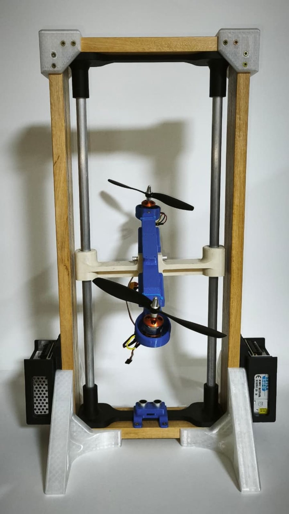

Paper en revisión · ICSC 2026
Tower: banco torre-hélice de 2 GDL
Comparación experimental de seis leyes de control (PID, LQI, LQG, MPC, IMC y H∞) implementadas en un Arduino, sobre un banco que controla altura e inclinación.